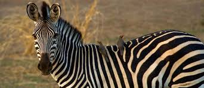

About Tanzania's Wildlife
Tanzania is home to some of Africa's most iconic wildlife and pristine ecosystems. From the vast Serengeti plains to the peaks of Mount Kilimanjaro, this East African nation boasts an extraordinary diversity of species and habitats.
Mammals

African Lion
Tanzania hosts one of Africa's largest lion populations, particularly in the Serengeti and Ngorongoro Crater.

African Elephant
Tanzania is home to approximately 60,000 elephants, making it one of the most important elephant habitats in Africa.
Cheetah
The world's fastest land animal thrives in Tanzania's open plains, particularly in the Serengeti ecosystem.

Black Rhinoceros
Critically endangered but making a comeback through intensive conservation efforts in Tanzania's protected areas.

Wildebeest
Over 1.5 million wildebeest participate in the Great Migration, one of nature's most spectacular events.

Giraffe
Tanzania hosts multiple giraffe species including the endangered Masai giraffe.
Birds
Lesser Flamingos
Lake Natron and Lake Manyara host millions of flamingos, creating stunning pink landscapes.

African Fish Eagle
The African fish eagle is a symbol of wilderness with its distinctive call echoing across lakes and rivers.

Secretary Bird
This unique terrestrial raptor stalks the grasslands hunting snakes and small mammals.
Wildlife Image Gallery

Map of Major Ecosystems
Understanding Biodiversity
Biodiversity refers to the variety of life on Earth, encompassing the different species of plants, animals, fungi, and microorganisms, the genetic differences within these species, and the ecosystems they form. Tanzania is a biodiversity hotspot, hosting a wide range of ecosystems, from savannahs and wetlands to forests and mountains.
This diversity is crucial for maintaining ecological balance, supporting food chains, and providing essential services such as pollination, water purification, and climate regulation. Biodiversity also holds cultural, recreational, and economic significance, attracting millions of tourists annually and supporting local livelihoods.
However, biodiversity faces threats from human activities such as deforestation, habitat destruction, and climate change. Conservation efforts are vital to protect this natural heritage for future generations.
Success Stories
Read about the incredible conservation efforts that have helped protect Tanzania's wildlife.
- Elephant Conservation: Reduced poaching by 70% in the last decade.
- Rhino Protection: Successful breeding programs in Ngorongoro.
- Community Involvement: Local communities managing wildlife corridors.
Get Involved
Join us in protecting Tanzania's biodiversity. You can volunteer, donate, or spread awareness.